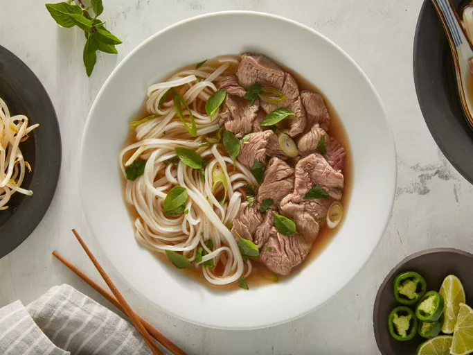

Home
Beef Pho

Description
This traditional pho recipe uses beef bones, fish sauce, star anise, and ginger to create a delicious aromatic Vietnamese broth from scratch. The flavorful broth is ladled over rice noodles and thinly sliced beef and topped with fresh garnishes.
Ingredients
- Beef Sooup Bones: Use the shank and knee to ,ake the homemade bone broth.
- Rice Noodles: You should be able to find dry rice noodles at most grocery stores, either in the international aisle or another pantry aisle.
- Beef: This recipe calls for beef top sirloin.make sure it's thinly sliced so that the hot broth can cook it.
- Fish Sauce: Fish sauce will gvie the pho a hint of salty, fishy flavour.
- Onion: Roast the onions for an extra depth of flavour.
- Spice and seasonings: This recipe calls for ginger, star anise and salt.
- Garnish: Garnish your pho with cilantro, green onion, thai basil, lime, hoisin sauce, sriracha, or anything else you like.
Steps
- Roast the beef bones and onions until the bones are browned and the onions are soft.
- Make the broth.
- Soak the rice noodles for an hour. Meanwhile, bring the broth to a simmer.
- Boil the noodles, then drain and add them to a bowl.
- Top with sirloin, cilantro, green onion, and broth. Garnish with your desired toppings.